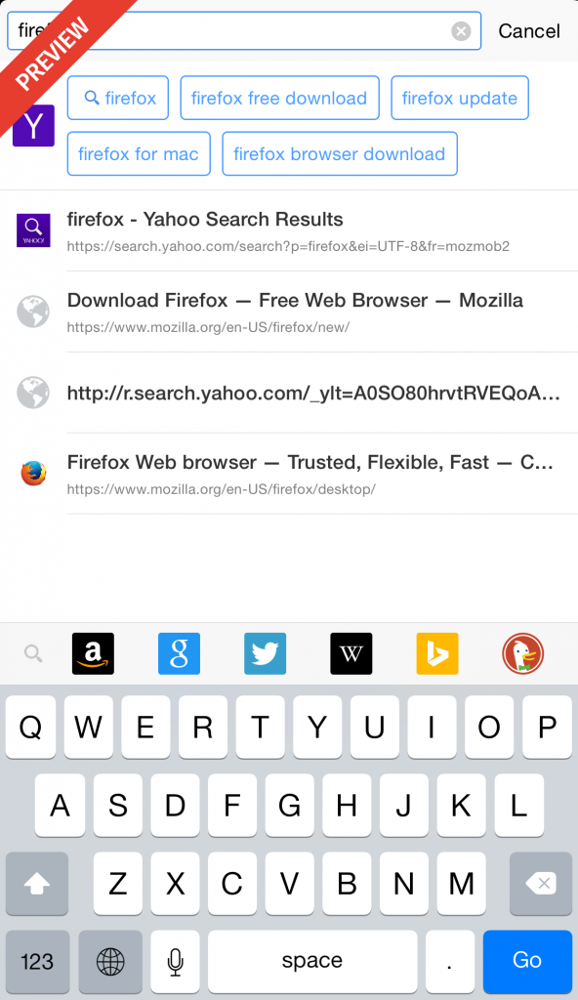
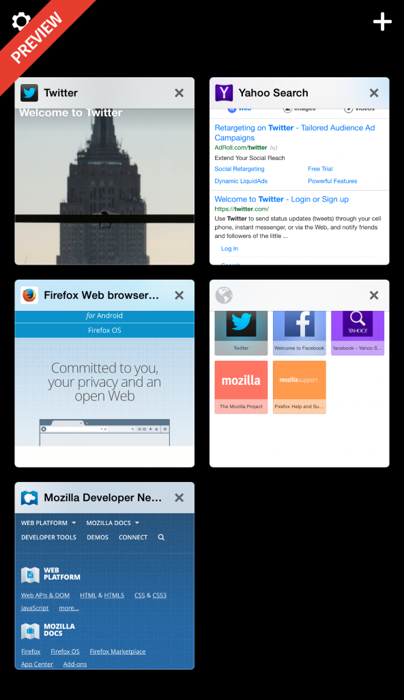
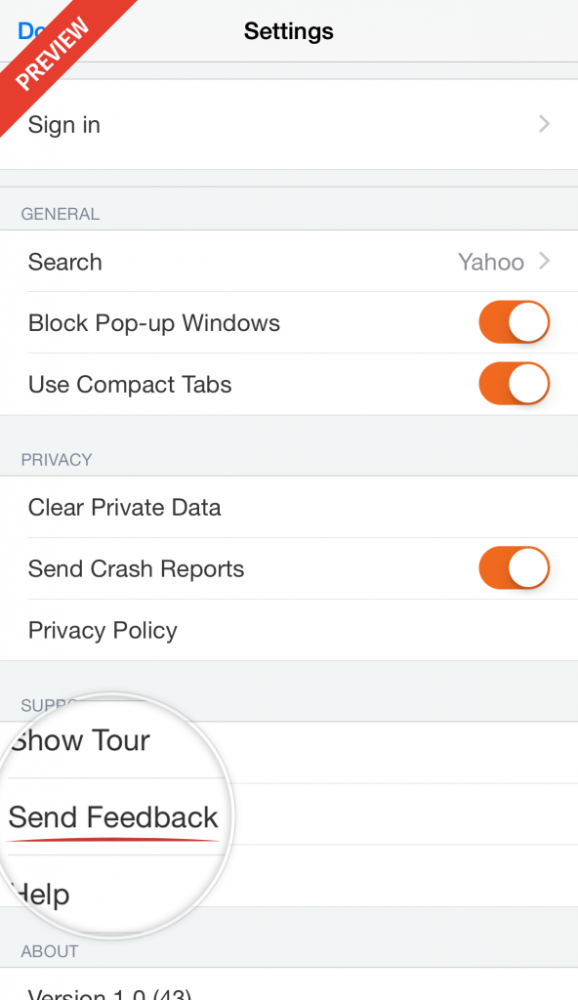

在我們首次公開 iOS 版 Firefox 瀏覽器的消息之後，今天很高興能在紐西蘭釋出預覽 (Preview) 版本。

提供預覽版本以蒐集反饋意見
Mozilla 希望能以 Firefox 提供 iOS 的絕佳瀏覽經驗。而透過第一次的公開預覽版本，我們要先蒐集單一國家的反饋意見，接著再開放予其他國家並取得更多建議，最後才會完整公開給大家使用。我們將依此預覽版本所獲得的意見來打造新功能，並有助於今年稍晚讓 Firefox for iOS 正式於 App Store 上架。如果你對 Firefox for iOS 有濃厚興趣，也正好身處預覽版本的釋出國家，就請快來這裡登記。
我們蒐集反饋意見的重點功能
此預覽版本具備「智慧搜尋 (Intelligent Search，暫譯)」功能，可建議搜尋結果並讓使用者選擇自己所愛用的搜尋服務。

而透過「Firefox Accounts」，使用者同樣可將桌面版 Firefox 瀏覽器的密碼、歷史紀錄、已開啟的分頁帶入 iOS 裝置。Firefox for iOS 預覽版本同樣具體呈現了分頁，讓你能直覺找出已開啟的分頁。

蒐集反饋意見
我們需要多元意見來協助打造絕佳的 Firefox for iOS。你可在 App 中直接向我們提出意見。只要點選 Firefox for iOS 右上方數字顯示的分頁圖示，再點選進入左上方的「Settings」選單，找到其中「Support」區塊就能直接發送出你的寶貴意見。
